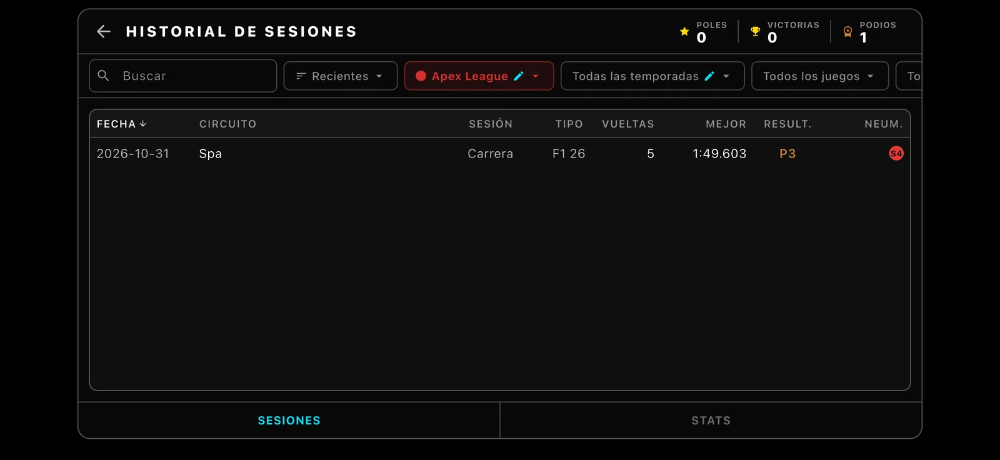
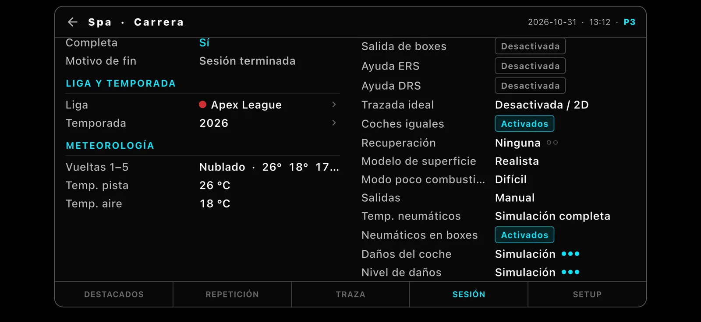
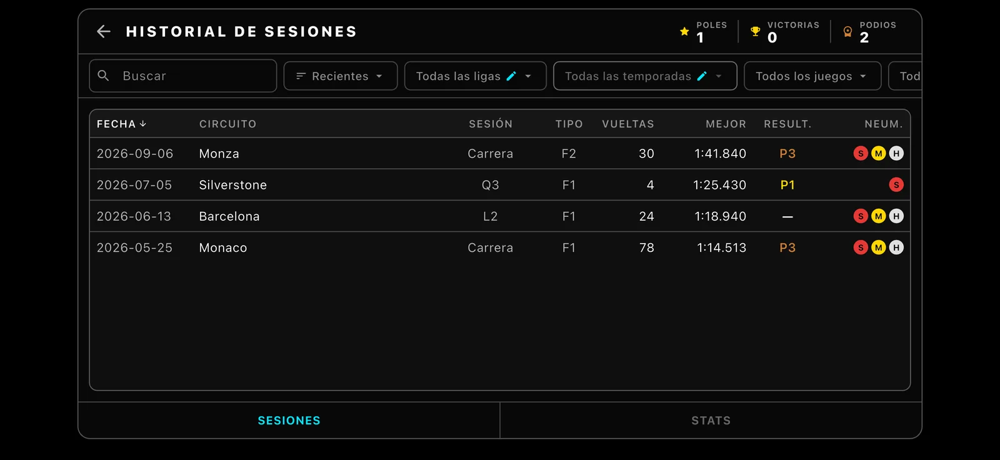

Gratis
- Crear ligas y asignar las sesiones que puedes abrir
- Los filtros de liga y temporada
Cómo funciona
Agrupa tus carreras de liga y tus temporadas, y filtra el historial y tus estadísticas por ellas.
Si corres en una o varias ligas, asignar las sesiones mantiene juntas las de cada liga. Filtra el historial o tus estadísticas por liga y temporada para seguir un campeonato, sin mezclar tus entrenamientos en solitario.

La liga tiene que existir antes de que puedas asignarle una sesión.
Borrar una liga nunca borra una sesión. Las sesiones asignadas simplemente dejan de mostrar una liga.
Si aún no tienes ligas, la fila Liga dice «Sin ligas». Crea una primero, como en el paso 1.

De vuelta en la pestaña SESIONES, toca Todas las ligas o Todas las temporadas para mostrar una sola liga o temporada. La lista de temporadas solo ofrece los años que hayas asignado. La pestaña STATS tiene los mismos filtros de liga y temporada.
